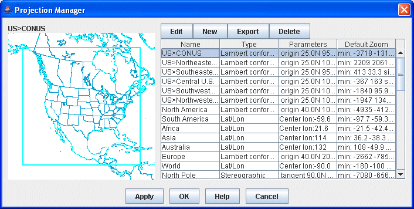
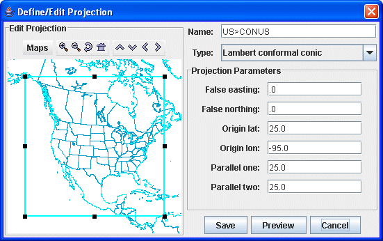

Projection Manager
The Projection Manager allows you to choose, edit, and save map projections for
use in McIDAS-V.
A projection is a way of mapping the surface of the Earth (a curved 2D surface) onto a flat 2D surface (a plane). A projection transforms a point on the earth (specified by latitude, longitude) to a point on the projection plane.
In the Projection Manager, both the projection and the area of the Earth can be specified. For example, you can make a Lambert Conformal map of North America, and a Lambert Conformal map of Sedgwick County, Kansas. Same projection, different areas.
McIDAS-V provides several basic types of projections: Lat/Lon, Lambert conformal conic, Transverse mercator, Stereographic, Mercator, Albers Equal Area, Lambert Azimuth Equal Area, Orthographic, VerticalPerspectiveView. Each of these can be parameterized (e.g., tangent point, origin longitude) to create a specific projection area of that type. When you define a projection and area, you specify the type of projection and its parameters.
Projection Manager Window
You can bring up the Projection Manager with the Projections-> New/Edit... menu item in the Main Display window, or through the Tools->Projections->Edit Map Projections menu option in the Main Display window. Projections supplied with McIDAS-V are shown in the list. There may be additional projections you have created and named. In the figure, the US->CONUS projection is highlighted, and displayed on the left.

Image 1: Projection Manager
Properties
- - Opens a Define/Edit Projection window, where you can edit the map boundaries, type, and name of the existing map.
- - Opens a Define/Edit Projection window, where you start from scratch by naming the map, setting the boundaries, and selecting the map type.
- - Allows you to export a map and save it to a file.
- - Deletes the selected map and removes it from the list.
- Name - Lists the names of the user-saved and default maps.
- Type - Lists the type of projection that is used to display the map.
- Parameters - Lists the lat/lon origin of the display, as well as the parallels.
- Default Zoom - Represents the zoom level and size of the map.
 - Changes the map projected in the Main Display window to the selected map and closes the Projection Manager.
- Changes the map projected in the Main Display window to the selected map and closes the Projection Manager. - Opens the McIDAS-V User's Guide to this page.
- Opens the McIDAS-V User's Guide to this page.
McIDAS-V starts with a default projection. Use the Default pulldown menu to select the projection that will be shown each time your McIDAS-V starts. (The default projection may not be used if you are starting McIDAS-V with a Bundle of configuration information).
Define/Edit Projection Window
This allows you to define new projections and to modify existing ones. Remember that a projection not only consists of the mathematical projection, but also the area of the Earth that is seen.
Here is how to create a new or revised projection:
- Choose or from Projection Manager
window. You can also double click on an existing projection in the Projection Manager to open the Define/Edit Projection window.
- Enter a new or revised name if necessary. See the Properties section below for more information about naming and creating hierarchies.
- Choose a Projection Type from the pull-down menu.
- Fill in the projection parameters.
- Set the map area shown with this projection by zooming and panning the view on the left. To zoom, click and drag the left mouse button. Use the other buttons in the window to zoom in/out and translate the display.
- Resize the map boundaries by clicking and dragging on the black boxes at the borders of the image. Pressing Delete or Ctrl+D will delete the box, and pressing Ctrl+R will resize the boundaries of the map to the current geographical boundaries of the map in the Define/Edit Projection window.

Image 2: Define/Edit Projection Dialog
Note that some fields in this window may be different depending on the map type you select. There are no Projection Parameters when using a Lat/Lon map type. In the example shown, a Lambert conformal conic projection is being defined with the projection parameters as shown in the figure.
Properties
- / Projection - Edits an existing/Creates a new map area.
- - Turns on/off maps in the map area while defining a new projection.
 Zoom In - Zooms in over the current map area.
Zoom In - Zooms in over the current map area. Zoom Out - Zooms out over the current map area.
Zoom Out - Zooms out over the current map area. Previous Map Area - Returns to the previous map area.
Previous Map Area - Returns to the previous map area. Home Map Area - Returns to the default map area.
Home Map Area - Returns to the default map area. Move View Up - Moves the view up (map down).
Move View Up - Moves the view up (map down). Move View Down - Moves the view down (map up).
Move View Down - Moves the view down (map up). Move View Left - Moves the view left (map right).
Move View Left - Moves the view left (map right). Move View Right - Moves the view right (map left).
Move View Right - Moves the view right (map left).
- Name - Represents the name of the map. Enter in a new or revised name if necessary (projection names are unique). Use ">" between names to create a category hierarchy.
- Type - Represents the projection type. Each projection type will have their own specific parameters to define.
- Projection Parameters - Determines the positioning of the boundaries of the map. These parameters will differ depending on the map type that you select.
- False easting - Moves the map boundaries east and west. A negative value in this field moves the boundaries of the map east, and a positive value moves the map's boundaries west.
- False northing - Moves the map boundaries north and south. A negative value in this field moves the boundaries north, and a positive value moves the map's boundaries south.
- Latitude0 - Defines the maximum latitude value.
- Latitude1 - Defines the minimum latitude value.
- Longitude0 - Defines the maximum longitude value.
- Longitude1 - Defines the minimum longitude value.
- Origin lat - Represents the center of the map's boundaries with respect to latitude.
- Origin lon - Represents the center of the map's boundaries with respect to longitude.
- Height - Sets the zoom level of the display in the Define/Edit Projection window. The larger the value, the more zoomed in you will be. This is an option with the Lambert conformal conic map type.
- Scale - Sets the scale of the map with respect to size. The larger the scale, the larger the map will appear. This is an option with the Transverse mercator map type.
- Tangent lon - Sets the tangent longitude for the map. This is an option with the Transverse mercator map type.
- - Changes the map in the Projection Manager to match the map in the Define/Edit Projection window.
-
 - Displays what the projection looks like.
- Displays what the projection looks like.
-
 - Exits the Define/Edit Projection window.
- Exits the Define/Edit Projection window.